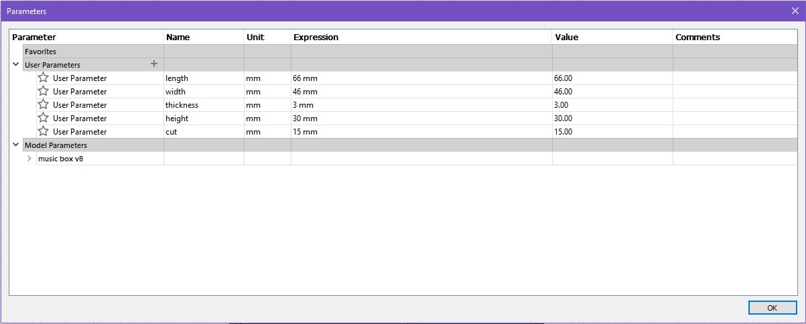
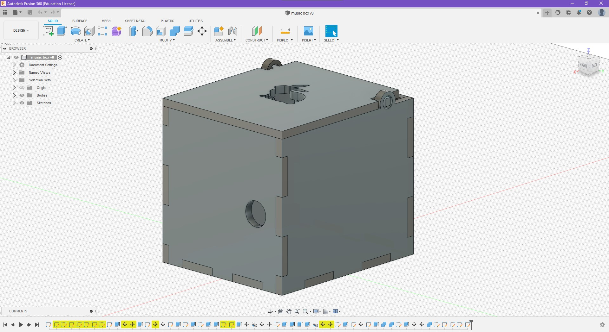
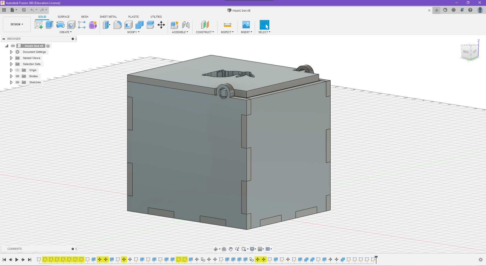
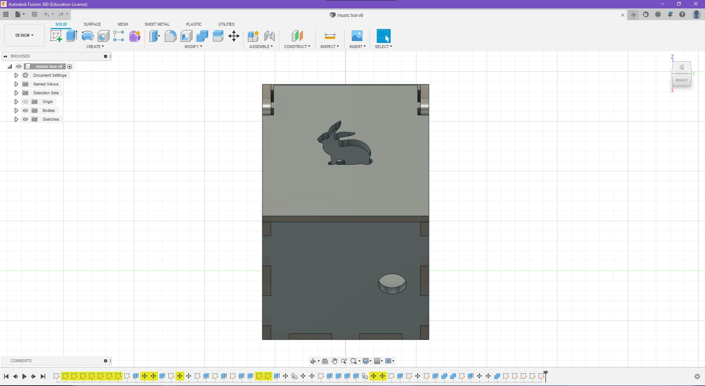
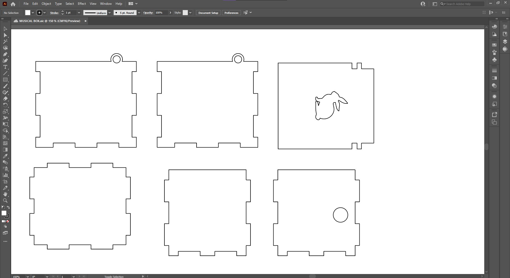
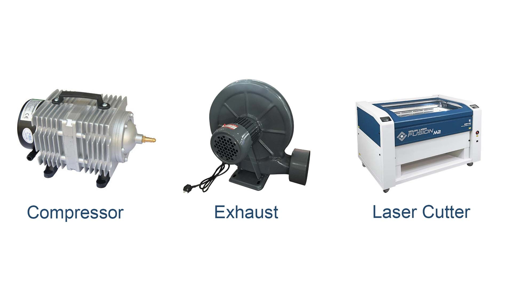
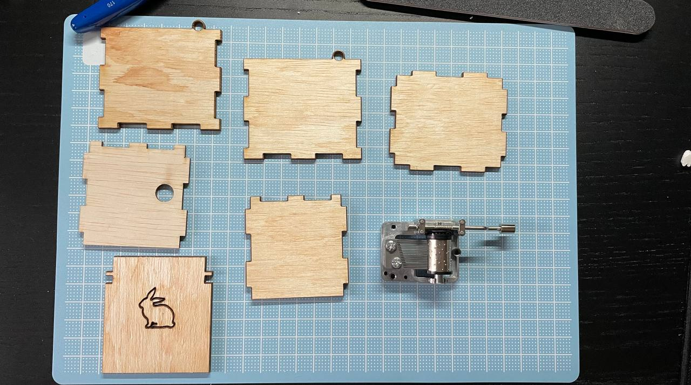

Before actually designing the box to be laser cut, I made some measurements of the music box
I then decided on these parameters for the box. Since this is my first time designing a 3d object, I decided to make the width and length bigger as I was afraid that there would not be enough space for the box. The thickness is 3mm which is the wood which will be used for the box. I found that using parameters to design the box was useful as it makes it easier to change the measurements later on.
  This is the final design of the box with a bunny cut out at the top. When designing the box I struggled with two things. The first thing was the placement of the hole for the music crank. I found myself either putting the hole too high or too low. After remeasuring the music box again, I decided to put the hole 20mm above from the bottom piece. The other thing I struggled with was the placement of the hole for the hinge. It took alot of trial and error to line up the hole with the hinge on the top cover.
After designing the box, I created a sketch for each side, and exported it as a dxf. I then compiled all the dxf files into illustrator so that I can arrange them neatly before laser cutting. I then exported it to dxf once again.
Before using the laser cutter, the compressor and exhaust must be turned on first. This is so that all the fumes or smokes created from the laser burning the wood does not get stuck in the room. This is something important as it can cause users to feel uneasy if they were to breathe in the smoke
\
Importing to corel draw:
1. When importing files to coreldraw, all outlines should be selected and changed to hairline thickness.
2.For outlines to be cut, set the colour to RED rgb(255,0,0)
3. For outlines to be engraved, set the colour to GREEN rgb(0,255,0)
4. Once finished,click print to send the file to the laser cutter.
Laser cutter settings:
1.Arrange the objects to the size of the wood. Use the rulers at the top and left side of the printing suface to see whether or not the cut is going to fit on the wood
2. Import the profile for the material. In this case it would be Vector: Plywood(3mm)
3. Select vector option for cutting
4. Set power to 65% for cutting
5. Click apply,ok and go
This is the what alll the sides look like after coming out of the laser cutter
These are the pieces before the final assembly
This is the final box fully assembled. Even though all the cuts to fit the pieces together were designed with no gaps, I found myself still needing glue to put the pieces together without it falling apart. This is because the laser did not cut exactly to the outlines. One thing I would improve if i were to make the box again would be to make the all dimensions of the box to be smaller as it was a little oversized for the music box. Overall even though there were some struggles designing the box, it was a fun expereince :)